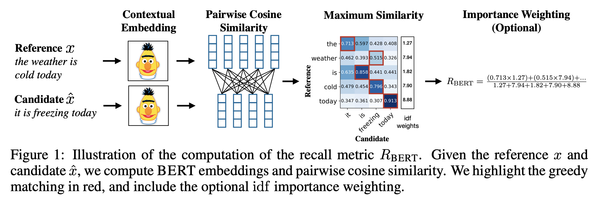

Deep dive · May 13 · LLM Evaluation · 7 min read
How BERTScore Measures Meaning Beyond Word Overlap
BERTScore becomes useful the moment a semantically correct reply gets penalized simply because it did not reuse the reference wording.
What is BERTScore?
Language generation evaluation metric based on pre-trained BERT contextual embeddings
BERTScore is a language generation evaluation metric based on pre-trained BERT contextual embeddings. It computes the similarity of two sentences as a sum of cosine similarities between their tokens’ embeddings.

This figure illustrates how BERTScore recall is computed. The reference and candidate sentences are first converted into contextual token embeddings, and cosine similarity is calculated between all token pairs. Since this is recall, each token in the reference looks for its most similar token in the candidate, and those best matches are highlighted in red. The recall score is then obtained by averaging these maximum similarities, optionally with IDF-based importance weighting so that more informative words contribute more strongly than common ones. If we instead wanted precision, we would reverse the direction and let each token in the candidate find its best match in the reference. The F1-score is then computed as the harmonic mean of precision and recall, giving a balanced view of both semantic correctness and semantic coverage.
This matching-based view also makes it easier to see why BERTScore is often more useful than pure n-gram overlap. In particular, it helps address two common pitfalls in n-gram-based metrics:
- n-gram models often fail to robustly match paraphrases. For example, given the reference
people like foreign cars, BLEU and METEOR incorrectly give a higher score topeople like visiting places abroadcompared toconsumers prefer imported cars. This leads to performance underestimation when semantically-correct phrases are penalised because they differ from the surface form of the reference. - n-gram models fail to capture distant dependencies and penalise semantically-critical ordering changes. For example, given a small window of size two, BLEU will only mildly penalise swapping of cause and effect clauses: reference sentence
She failed the exam because she did not studyand candidate sentenceShe did not study because she failed the exam, especially when the arguments are long phrases. In contrast, contextualised embeddings are trained to effectively capture distant dependencies and ordering.
How BERTScore is Calculated?
Greedy matching based on cosine similarity between contextual embeddings
BERTScore is computed by comparing the contextual embeddings of tokens in the reference and candidate sentences and measuring their similarity using cosine similarity. The central matching step in this process is called greedy matching.
In greedy matching, each token is paired with the most similar token in the other sentence based on cosine similarity between their contextual embeddings. The idea is simple: at each step, choose the strongest available semantic match so that the overall comparison captures meaning rather than exact word overlap. This matching is performed in both directions between the two sentences.
Example
Reference sentence: "The cat is sleeping on the sofa."
Candidate sentence: "A cat is napping on the couch."
Steps in greedy matching
- Compute similarity for each token pair using cosine similarity in embedding space.
- For each token in the candidate, find the most similar token in the reference.
Example matches:
"A"→"The"(similarity:0.92)"cat"→"cat"(similarity:1.00)"is"→"is"(similarity:1.00)"napping"→"sleeping"(similarity:0.89)"on"→"on"(similarity:1.00)"the"→"the"(similarity:1.00)"couch"→"sofa"(similarity:0.87)
The same process is then repeated in the opposite direction, from reference to candidate. The highest similarity scores from these two passes are averaged to compute BERTScore precision, recall, and F1.
Importance Weighting
Rare words can be more indicative for sentence similarity than common words
Rare words are often more informative for sentence similarity than very common ones. BERTScore captures this through optional importance weighting using inverse document frequency (IDF) scores computed from the test corpus. If you want to enable or customize this weighting in practice, the score() package exposes two main parameters:
idf (bool): a boolean to specify whether to use IDF or notidf_sents (List of str): the list of sentences used to compute the IDF weights
Why BERTScore values almost never go below 0?
Cosine similarity compares direction, but real language embeddings rarely show perfect negative alignment
Cosine similarity measures the directional similarity between two vectors and ranges from:
+1: vectors point in the same direction, indicating a perfect match0: vectors are orthogonal, indicating no similarity-1: vectors point in opposite directions
In language models, words that appear in similar contexts tend to lie closer together in embedding space. Even unrelated words often do not become strongly negative. As a result, BERTScore values rarely approach -1 in practice.
There are two main reasons for this:
- During pretraining, BERT is not explicitly learning oppositional meanings in the same way that raw mathematical vectors might be arranged in space.
- The embedding space learned by BERT is dense, high-dimensional, and not symmetrically distributed around the origin, which makes perfectly negative alignment uncommon.
A simple real-world intuition looks like this:
| Pair | Cosine Similarity (approx) |
|---|---|
"car" vs. "vehicle" |
0.95 |
"car" vs. "banana" |
0.2–0.4 |
"car" vs. "askjdlaksjd" (nonsense) |
~0.0 |
"car" vs. "not car" |
still positive (~0.5) |
This is why, although cosine similarity is theoretically defined from -1 to 1, BERTScore values in practice usually stay in a narrower and mostly positive range.
Rescaling with Baseline
BERTScore is easier to interpret if it has a natural range
BERTScore computes a sentence-level similarity score from token-level similarities, where each token comparison is based on cosine similarity between contextual embeddings. In theory, its numerical range is the same as cosine similarity, from -1 to 1.
In practice, however, BERTScore usually falls within a much narrower range. In an extreme case, scores computed with a large RoBERTa model are often clustered between 0.85 and 0.95.
Even though BERTScore still correlates strongly with human judgment, this narrow range can make the values harder to interpret directly. Rescaling makes the scores more intuitive to read, typically by shifting them toward a more natural range such as 0 to 1, without changing their correlation behavior.
Occasionally, some individual similarity entries may become negative after rescaling, but that does not affect the final BERTScore because the rescaling is applied after the score has already been computed.
You can enable baseline rescaling directly in the bert-score package, either through the functional score() API or the object-oriented BERTScorer API.
# Install the package
!pip install bert-score
from bert_score import score
# Functional API
precision, recall, f1 = score(
candidates,
references,
lang="en",
rescale_with_baseline=True,
)
# Object-oriented API
# If you plan to call BERTScore repeatedly, it is more efficient to
# cache the model inside a scorer object instead of rebuilding it each time.
from bert_score import BERTScorer
scorer = BERTScorer(
lang="en",
rescale_with_baseline=True,
)
precision, recall, f1 = scorer.score(candidates, references)How Rescaling with Baseline is Done?
Simple linear transformation
Let the BERTScore for a candidate-reference pair be denoted by X.
Let Base represent a lower bound that BERTScore values typically take in practice, where -1 < Base < 1 because the underlying similarity comes from cosine similarity.
The rescaled BERTScore, denoted by X^, is then obtained through a simple linear transformation:
X^ = (X - Base) / (1 - Base)With a reliable baseline value, the rescaled score X^ will typically fall between 0 and 1, making it easier to interpret than the raw score.
How to get the Base value?
Random pairing and average BERTScore
The original BERTScore authors computed these baseline values by using random candidate-reference pairs drawn from a large corpus.
The process was:
- Step 1: From a large corpus of roughly one million sentences, sentences were randomly grouped into candidate-reference pairs, resulting in about half a million random pairs.
- Step 2: For each contextual embedding model, BERTScore was computed on these random pairs, and the average score was taken as the baseline.
These steps were carried out by the BERTScore authors for the released baseline files. If you want to compute baselines for your own model or setup, you can follow the same process yourself.
The baseline is computed for different representation layers, and separate baseline values are provided for precision, recall, and F1.
The baseline files for different models are provided in the official BERTScore repository here: BERTScore rescale baselines.
The example below shows how these author-provided baseline values are applied in practice to rescale raw precision, recall, and F1 scores.
Example:
# Below values are the precision, recall, and F1 scores calculated using
# microsoft/deberta-xlarge-mnli, where F1 is the harmonic mean of
# precision and recall.
precision = tensor([0.7033, 0.4807, 0.4953, 0.5119, ...])
recall = tensor([0.7910, 0.6069, 0.6123, 0.6553, ...])
f1 = tensor([0.7446, 0.5365, 0.5476, 0.5748, ...])
# The baseline values for microsoft/deberta-xlarge-mnli at layer 40 are:
# precision = 0.5169066
# recall = 0.5170288
# f1 = 0.5150192
# One example:
# (0.7033 - 0.5169066) / (1 - 0.5169066) = 0.3858330501In this setup, the rescaled F1 score will not be exactly equal to the harmonic mean of rescaled precision and rescaled recall, because each of the three metrics uses its own baseline value.
When to Use Rescaling and When Not To
Good for thresholds and readability, not for comparing different models’ rescaled values
If your goal is to define a practical threshold for deciding whether two sentences are similar enough for a given application, rescaling can be very helpful. It makes the scores easier to interpret and gives you a cleaner range from which to choose a threshold value.
However, rescaled scores are less suitable when you want to compare embeddings from two or more different pretrained models using BERTScore. That is because each model has its own baseline value, so the rescaled numbers are not directly comparable across models.
Important Points
Package behavior, language support, and length limitation
- The outputs of the
score()function are tensors for precision, recall, and F1. Each tensor has the same number of items as the candidate and reference lists, and each item is a scalar score for the corresponding candidate-reference pair. - BERTScore supports 104 languages.
- Unlike BERT, RoBERTa uses a GPT-2 style tokenizer, which can create additional space tokens when multiple spaces appear together. To avoid this, it is recommended to normalize repeated spaces beforehand, for example with
sent = re.sub(r' +', ' ', sent)orsent = re.sub(r'\\s+', ' ', sent). - A practical limitation is sequence length. Because BERT, RoBERTa, and XLM with learned positional embeddings were pre-trained with a maximum input length of
512, BERTScore becomes undefined for sentences longer than510tokens once[CLS]and[SEP]are added. In such cases, the input will be truncated. For much longer inputs, models such as XLNet may be a better choice.
Using score() and BERTScorer() in Practice
Key parameters and default language models
If you plan to use the Python package directly, the most useful parameters to tune in practice are the model, layer, language, IDF weighting, batch settings, and baseline-rescaling options.
model_type (str): contextual embedding model specification. You must specify at least one ofmodel_typeorlang.num_layers (int): the representation layer to use.lang (str): the language of the candidate and reference sentences.idf (bool)andidf_sents (List[str]): control whether IDF weighting is used and which sentence corpus is used to compute it.rescale_with_baseline (bool)andbaseline_path (str): control baseline-based rescaling.device (str),batch_size (int), andnthreads (int): affect runtime and execution behavior.return_hash (bool)anduse_fast_tokenizer (bool): optional configuration details for reproducibility and tokenizer behavior.
The strongest released model is often reported as microsoft/deberta-xlarge-mnli, while microsoft/deberta-large-mnli can be a useful faster alternative.
Default models for some common language settings are:
| Language | Default model |
|---|---|
en | roberta-large |
en-sci | allenai/scibert_scivocab_uncased |
zh | bert-base-chinese |
tr | dbmdz/bert-base-turkish-cased |
others | bert-base-multilingual-cased |
Resources for Future Exploration
Good places to go deeper with BERTScore
If you want to explore BERTScore further, these are the most useful next stops:
- BERTScore model ranking sheet for supported models, best layers, Pearson correlation values, and ranking on the WMT16 to-English benchmark.
- Hugging Face Evaluate: BERTScore for a practical metric card, parameter overview, and quick experimentation.
A practical strategy is to first choose the embedding model you want to evaluate with, then test whether plain BERTScore, IDF weighting, and baseline rescaling actually improve correlation on your own dataset rather than assuming the default configuration will be best.
References
Selected papers and notes
- Zhang, T., Kishore, V., Wu, F., Weinberger, K. Q., and Artzi, Y. (2020). BERTScore: Evaluating Text Generation with BERT.
- Devlin, J., Chang, M.-W., Lee, K., and Toutanova, K. (2019). BERT: Pre-training of Deep Bidirectional Transformers for Language Understanding.
Part of this series